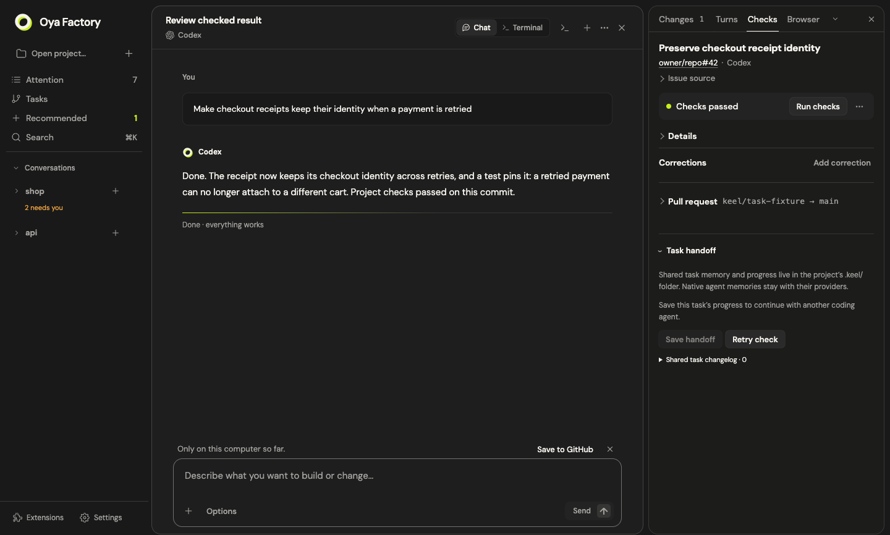

An agentic development environment
Run every coding agent.
See everything they do.
Oya Factory runs Claude Code, Codex, Antigravity and OpenCode side by side — each task on its own branch — and puts every diff, command and check on screen the moment it happens.
Free and open source · MIT · No account, no license key, no step limits

Works with the agents you already use
- Claude Code
- Codex
- Antigravity
- OpenCode
The terminal shows you text.
Oya Factory shows you the work.
-
01
Visible
Each turn is one reviewable record: the files it changed, the commands it ran with their output, your project's checks, the time and the cost. A command that needs your yes arrives as a question in the conversation, not a refusal in a log.
-
02
Clean git
A lane is a branch is a worktree. Every turn is checkpointed and can be rewound; merging is a
--no-ffyou can read later. Nothing lands in your history that you couldn't reconstruct. -
03
Many agents, one machine
Run several lanes at once, Claude in one and Codex in the next. Each is legible on its own, and two agents are never allowed to write the same working tree.
Everything a day of agent work needs
Your checks, every turn
Your project's own
make check, tests or lint run after each turn, and the verdict sits beside the reply.Rewind any turn
A snapshot before every turn. Undo what an agent did without touching what you did.
Stage one hunk
Keep three of an agent's four edits. Hunks are matched by content, so nothing stages at the wrong place.
Issue to pull request
Start a task from a GitHub issue on its own branch, send corrections, and publish one traceable PR.
Recurring tasks
A saved instruction on a schedule — nightly dependency checks, weekly cleanups — each run on its own branch.
A browser for your agents
Each lane gets its own browser tab, so an agent can test the page it just built without touching yours.
Point at the pixel
Click an element in the live preview, say what should change, and see whether the right file changed.
Find in the terminal
⌘F through an agent's scrollback, and quick commands you save once and run from anywhere.
Set up right, automatically
An agent team, recommended skills and a readiness scan, kept current as Oya Factory improves.
Free. Open source. Yours.
Oya Factory is MIT licensed. Read the code, change it, ship it. What it writes into your projects is yours. It runs on your machine: your agents talk to their own providers, and Oya Factory puts no server of its own in between.